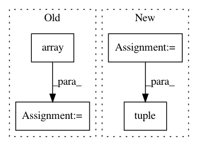

beaff02d91a80c2cf12e626d47b3f1678188472d,mne/source_space.py,,_get_volume_label_mask,#Any#Any#Any#,1852
Before Change
vox_bool = mgz_data == vol_id
// Get the 3 dimensional indices in voxel space
vox_ijk = np.array(np.where(vox_bool)).T
// Transform to MRI coordinates (where our surfaces live)
_, vox_mri_t, _, _, _ = _read_mri_info(mri)
rr_voi = apply_trans(vox_mri_t, vox_ijk) // mri voxels -> MRI surface RAS
After Change
mri_vox_t = invert_transform(vox_mri_t)
rr_vox = apply_trans(mri_vox_t, rr)
good = (rr_vox >= -.5).all(-1)
idx = np.empty(rr.shape[::-1], np.int64)
for ii in range(3):
good &= rr_vox[:, ii] < mgz_data.shape[ii] - 0.5
idx[ii] = np.clip(np.round(rr_vox[:, ii]).astype(np.int64),
0, mgz_data.shape[ii] - 1)
good &= mgz_data[tuple(idx)] == vol_id
return good
In pattern: SUPERPATTERN
Frequency: 4
Non-data size: 4
Instances
Project Name: mne-tools/mne-python
Commit Name: beaff02d91a80c2cf12e626d47b3f1678188472d
Time: 2020-04-22
Author: larson.eric.d@gmail.com
File Name: mne/source_space.py
Class Name:
Method Name: _get_volume_label_mask
Project Name: WZBSocialScienceCenter/tmtoolkit
Commit Name: 08633bd190028ad3cbe4c13b352b9efeae90f17e
Time: 2019-03-22
Author: markus.konrad@wzb.eu
File Name: tmtoolkit/topicmod/tm_gensim.py
Class Name: MultiprocEvaluationWorkerGensim
Method Name: fit_model
Project Name: ilastik/ilastik
Commit Name: da09a6e992ff6dad66b81ef01e1a209867edcf6b
Time: 2014-04-28
Author: bergs@janelia.hhmi.org
File Name: lazyflow/operators/opResize.py
Class Name: OpResize
Method Name: setupOutputs
Project Name: AIRLab-POLIMI/mushroom
Commit Name: f2cfa5fb8e73229a1757acbcc94bab13099de439
Time: 2017-06-05
Author: carlo.deramo@gmail.com
File Name: PyPi/utils/parameters.py
Class Name: Parameter
Method Name: __call__